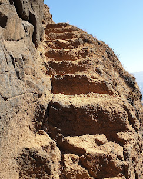
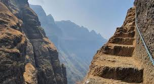

भैरवगड किल्ला
Location : Click Here For Google Map
- माहिती
- भैरवगड किल्ला महाराष्ट्र राज्याच्या रायगड जिल्ह्यात स्थित एक ऐतिहासिक किल्ला आहे. किल्ला रायगडच्या दक्षिण-पूर्वेस वसलेला आहे, आणि त्याची उंची समुद्रसपाटीपासून १,०७६ मीटर आहे. किल्ल्याची उंची आणि स्थानामुळे तो त्याच्या कालखंडातील एक अत्यंत सामरिकदृष्ट्या महत्त्वाचा किल्ला मानला जातो.
किल्ल्याची बांधणी १५व्या शतकात केली गेली होती आणि तो आदिलशाही साम्राज्याच्या काळात प्रमुख किल्ला होता. किल्ल्याचे प्रमुख आकर्षण म्हणजे त्याच्या शिखरावर असलेल्या मंदिरांची आणि संरक्षणात्मक संरचनांची रचना. किल्ल्याचे वातावरण चांगले संरक्षित असून, त्याच्या शिखरावरून आसपासच्या परिसराचे अद्भुत दृश्य दिसते.
भैरवगड किल्ल्याची रचना पाहता, किल्ला एक महत्त्वाचे सैन्य ठाणे आणि वॉच टॉवर म्हणून वापरण्यात आला होता. त्याचे प्रवेश मार्ग खूप कठीण होते, ज्यामुळे शत्रूंना किल्ला घेतल्यास फारसा त्रास होत नसे. किल्ल्याच्या आत असलेल्या तटबंदी, जलाशय, शंकर मंदिर आणि काही विशिष्ट संरचनांमुळे किल्ल्याचे ऐतिहासिक महत्त्व अजून वाढते.
आजकाल, भैरवगड किल्ला एक प्रमुख ट्रेकिंग स्थळ आहे, जिथे पर्यटक किल्ल्याच्या ऐतिहासिकतेला आणि निसर्ग सौंदर्याला अनुभवण्यासाठी येतात.
Explore the historical beauty

